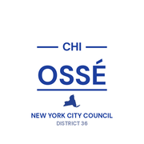

The district
 City Council
City Council State Senate
State Senate Congress
Congress Subway
Subway Citi Bike
Citi Bike NYC Ferry
NYC FerryTurn layers on and off. Tap an official's logo or a board's seal for its page. Zoning and land use lot by lot are on the land use map.
About
Assembly Member Latrice M. Walker represents State Assembly District 55. It sits in Brooklyn.
The district overlaps community boards Brooklyn 3, Brooklyn 5, Brooklyn 8 and Brooklyn 16.
It is policed by the 73rd, 75th, 77th and 81st Precincts.
It overlaps council districts 37, 41 and 42 and Senate districts 19, 20 and 25.
Members of the State Assembly serve two year terms.
Next on the ballot in November 2026. Find your poll site and sample ballot there, or see what is coming up on the calendar.
Assembly District 55 in numbers
U.S. Census Bureau, American Community Survey 2019-2023 5-year estimates.
Bills
Committees
Contact
Overlap
Community boards


Bars show how many of the district's election districts fall in each board.
Overlapping elected officials





| Brooklyn CB 16 | 70% of the assembly district | 93% of it |
| Brooklyn CB 8 | 10% of the assembly district | 15% of it |
| Brooklyn CB 3 | 9% of the assembly district | 8% of it |
| Brooklyn CB 5 | 7% of the assembly district | 3% of it |
| Brooklyn CB 17 | 2% of the assembly district | 2% of it |
| Brooklyn CB 9 | 1% of the assembly district | 2% of it |
| 73 Precinct | 70% of the assembly district | 93% of it |
| 77 Precinct | 10% of the assembly district | 16% of it |
| 81 Precinct | 9% of the assembly district | 18% of it |
| 75 Precinct | 7% of the assembly district | 3% of it |
| 67 Precinct | 2% of the assembly district | 2% of it |
| 71 Precinct | 1% of the assembly district | 2% of it |
| Sector 73B | 22% of the assembly district | 100% of it |
| Sector 73C | 18% of the assembly district | 100% of it |
| Sector 73D | 17% of the assembly district | 78% of it |
| Sector 73A | 14% of the assembly district | 99% of it |
| Sector 77D | 10% of the assembly district | 61% of it |
| Sector 81D | 6% of the assembly district | 48% of it |
| Sector 75B | 5% of the assembly district | 13% of it |
| Sector 81B | 3% of the assembly district | 18% of it |
| Sector 67C | 2% of the assembly district | 7% of it |
| Sector 75A | 2% of the assembly district | 3% of it |
| Sector 71B | 1% of the assembly district | 10% of it |
| Sector 67E | 0% of the assembly district | 2% of it |
| School District 23 | 65% of the assembly district | 94% of it |
| School District 17 | 14% of the assembly district | 7% of it |
| School District 16 | 13% of the assembly district | 19% of it |
| School District 19 | 8% of the assembly district | 3% of it |
| Council District 41 | 71% of the assembly district | 62% of it |
| Council District 37 | 19% of the assembly district | 13% of it |
| Council District 42 | 7% of the assembly district | 2% of it |
| Council District 36 | 3% of the assembly district | 2% of it |
| Senate District 25 | 65% of the assembly district | 27% of it |
| Senate District 19 | 24% of the assembly district | 4% of it |
| Senate District 20 | 12% of the assembly district | 5% of it |